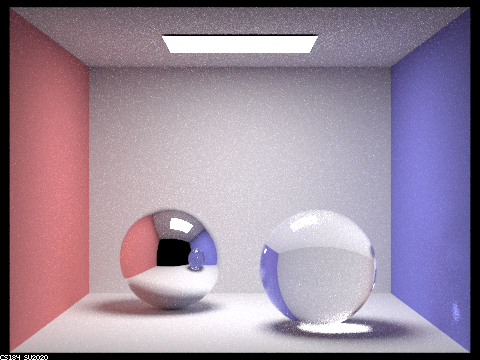
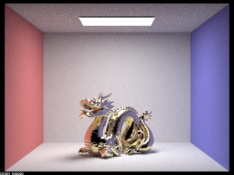
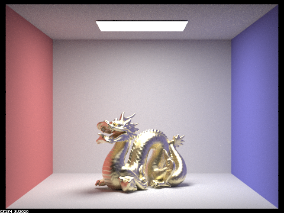

Overview:
This project is adding more to the 3-1 path-tracer project.
I chose to do part 1 and 2 of this project.
These two parts are adding/modifying reflection and refraction(to render mirror and glass materials).
Furthermore, we are able to render micro-facet surfaces after the implementation of part 2.
Part 1: Mirror and Glass Materials
"Show a sequence of six images of scene CBspheres.dae rendered with max_ray_depth set to 0, 1, 2, 3, 4, 5, and 100. The other settings should be at least 64 samples per pixel and 4 samples per light."
|
max_ray_depth = 0
|
max_ray_depth = 1
|
max_ray_depth = 2
|
max_ray_depth = 3
|
|
max_ray_depth = 4
|
max_ray_depth = 5
|

max_ray_depth = 100
|
"Point out the new multibounce effects that appear in each image."
"Explain how these bounce numbers relate to the particular effects that appear."
At depth 0, we can only see the light directly comes from the light source. So the rest of the box is completely dark.
At depth 1, we can also see lights that reflected once, so the room is "lit up". The spheres are mostly black except the reflection of light source. We don't see other colors on the spheres because with m = 2, lights that are reflected the second time from the box or refracted out of the glass cannot come to our eyes.
At depth 2, we can now see the reflection of the environment box, observe the top box and mirror ball are "colored" now. This colorization needs at least 2 bounces since a ray need to go from: source -> environment box(one-bounce) -> mirror ball/box-top(two-bounce) -> our eyes. The glass ball remains dark with very little color on the edge. This is because most light rays that go into the box(refraction) are still inside the ball(or goes to other non-window directions yet to come back) for m = 2, so we only see a few of them around the edge yet most of the ball is still dark.
At depth 3, we can now see refractions. A ray can travel 3 bounces now, so we may have path like: source -> colorful object(one-bounce) -> glass ball(two-refract-enter) -> glass ball(three-refract-exit) -> our eyes. Paths like this will help us see colors on glass ball.
We can also see the highlight under the glass sphere. This focus effect is generated by two refractions and one reflection inside the glass ball. The path would be like: source -> glass refract(one-refract-enter) → glass reflect(two-refract-exit) -> bright spot(three-bounce) → our eyes.
At depth 4, we can now see a brighter spot on the blue wall at the right bottom corner and the reflection of glass ball on the other mirror ball becomes colorful. The first effect is caused by internal reflections inside the glass ball: path = source → glass ball(one-refract-enter) → glass ball(two-internal-reflect) → glass ball(four-refract-exit) → the corner(five-bounce) → our eyes.
In general as depth increases, image becomes brighter as more light rays bounces around and make it to our eyes.
Part 2: Microfacet Material
"Show a sequence of 4 images of scene CBdragon_microfacet_au.dae rendered with α set to 0.005, 0.05, 0.25 and 0.5.
The other settings should be at least 128 samples per pixel and 1 samples per light.
The number of bounces should be at least 5.
Describe the differences between different images."
The material tends to diffuse for higher alpha, and are more glossy for smaller alpha. diffused reflect lights in all directions so it results in less, brighter shadows in general. Thus, the dragon seems brighter than glossy ones.
|
alpha = 0.005
|

alpha = 0.05
|
|

alpha = 0.25
|
alpha = 0.5
|
"Show two images of scene CBbunny_microfacet_cu.dae rendered using cosine hemisphere sampling (default) and your importance sampling.
The sampling rate should be fixed at 64 samples per pixel and 1 samples per light.
The number of bounces should be at least 5.
Briefly discuss their difference."
Importance sampling produces much less noisy image as it converges much better than uniform hemisphere sampling under same parameters.
|
default hemisphere sampling
|
importance sampling
|
"Show at least one image with some other conductor material, replacing eta and k.
Tell us what kind of material your parameters correspond to."
eta: [3.9186 4.0903 4.5288], k: [0.0236 0.041535 0.11463]
Website: https://cal-cs184-student.github.io/sp22-project-webpages-Sofia-Sun/